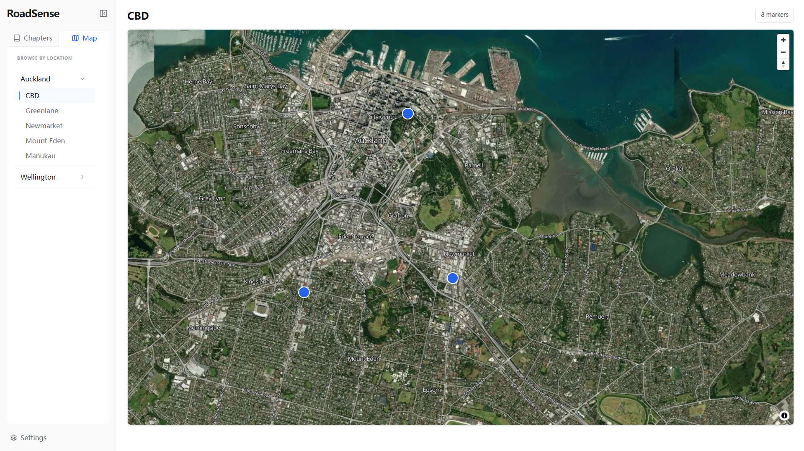
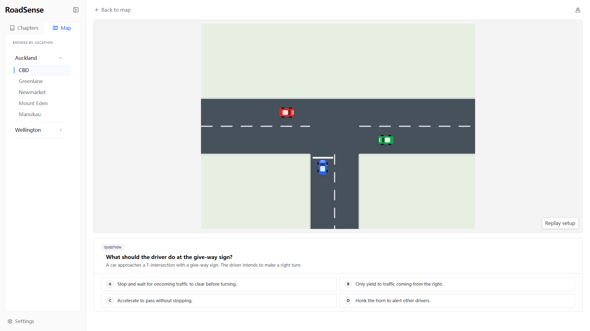

Learn the road before it tests you.
Interactive practice for real New Zealand roads.
Start practising
01
Pick a place
Pick a place
you want to practise.

02
See the situation
See the situation
before making the call.

03
Make your call.
04
Don’t just get
Don’t just get
the answer.
See why.
Replay the situation step by step.
↻ Replay
⌘ Follow paths
◎ Understand